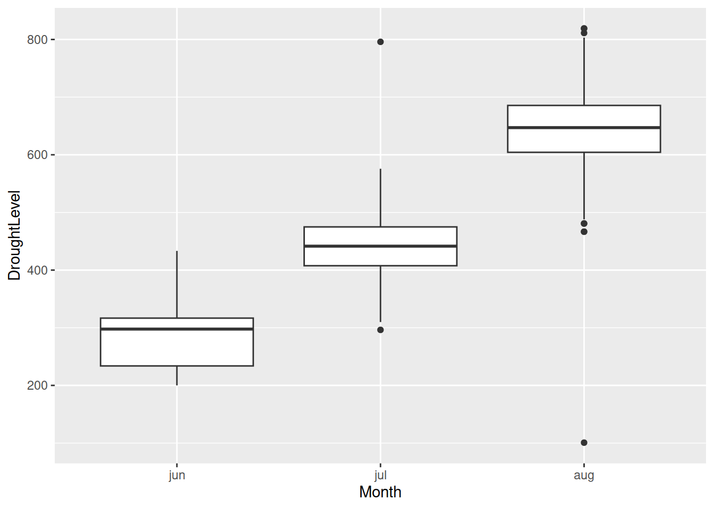

Associated Material
Zoom notes: Zoom Notes 03 -
Selecting and Filtering Data
Reading:
Introduction
When working with a complex data set, researchers rarely summarise or
analyse all the values as a single unit. More commonly, we select out
specific subsets of interest, and analyse those. We saw this pattern in
the Visualisation Module, where we wanted to isolate the data for a
single country (Denmark) from a data frame that had records for 142
different countries.
R has a rich and powerful syntax for selecting subsets from a large
data frame, based on specific conditions (for example, select only those
records where the value in column country is “Denmark”).
Because this kind of operation is so essential, researchers have also
developed additional R packages that supplement and extend the base R
facilities. Our favourite among these is a library called
dplyr. Library dplyr is widely used, and
you will see many examples of it in R code you find in the wild.
The functions in dplyr (and in all the other R libraries
you install) are technically wrappers around base R
code. That is, they are themselves written using base R commands. Thus
it is possible to perform all the same transformations by using
dplyr, or by using only base R. Many programmers and
researchers (including some of your lecturers) prefer to use base R for
these operations. Therefore, in this module, we will look at both
approaches.
People make the choice between dplyr and base R for
several reasons. Many people find dplyr syntax easier to
use, because it is more uniform. That is, all the
dplyr transformation functions use approximately the same
syntax. In base R, there is more variation. Scientists who work with
very large data sets are often concerned about how fast their code can
be executed. In some cases, dplyr executes more slowly than
base R (because of the extra code required for the wrapping), leading
these researchers to prefer the base R approach. Because
dplyr is a relatively new addition to R, some people prefer
base R because they learned it first, and are happy to continue using
it.
Unless you are required to use a particular approach (check with your
lecturer if you are unsure), you can choose whichever set of commands
you like using. You can even mix and match them – they give the same
results, and R doesn’t care. However, it is very important that you can
understand both styles. One of the great benefits of the R
ecosystem is the wide sharing of code, and you can’t fully participate
in this unless you are comfortable with all the major dialects.
Subsetting
The most direct way to select out a subset of a vector or data frame
is using the extraction operator [], which is part of
base R. With this operator we specify which elements we want in one of
three ways:
- By position (e.g. the 8th and 9th elements in a vector)
- By name (e.g. all of column Country)
- By some condition (e.g. all values less than 1)
The square bracket syntax works on both one and two dimensional data
(i.e. vectors or data frames) and we will look at both cases, starting
with vectors.
Subsetting by position
Each item in a vector has a position, starting from 1. Colloquially, this is
called its index. We pass the index as an argument to
[] to select the specific item.
# A numeric vector
some_numbers <- c(2, 45, -9, 6)
# Pull out the second item
some_numbers[2]
#> [1] 45
To select multiple items, pass a vector of indices into []. The
result is itself a vector of the items at the specified positions.
# A vector of strings
some_words <- c("Ant", "Bear", "Cat", "Dino")
# Pull out items 1 and 3
some_words[c(1,3)]
#> [1] "Ant" "Cat"
Items do not have to be selected in the same order in which they
appear in the original vector.
# Return items in different order
some_words[c(4, 2, 1)]
#> [1] "Dino" "Bear" "Ant"
Items can be duplicated in the result by using an index multiple
times inside [].
# Duplicate items
some_words[c(3,1,4, 4, 4,2)]
#> [1] "Cat" "Ant" "Dino" "Dino" "Dino" "Bear"
Although vector indices start from 1, [] will accept negative values.
A negative values excludes the item at that
position.
# Remove the first item
some_words[-1]
#> [1] "Bear" "Cat" "Dino"
Exercise:
The expression shown above does not remove element Ant from vector
some_words.
- Confirm this by executing an appropriate R command.
- Modify the expression so that Ant is deleted from vector
some_words
- Consider the possible downside of the command you just wrote.
Subsetting by condition
Commonly, we wish to select elements from a vector (or as we will see
later, rows from a data frame) based on some condition. For example, we
might want to select all items greater than some minimum value, or all
items not equal to some value we wish to exclude. The [] operator offers
a syntactic option that we use in these cases. Rather than passing in
specific item indices, we can pass in a vector of booleans (i.e. TRUE or
FALSE) having the same length as the vector from which we are selecting.
The operation returns all elements for which the corresponding value of
the boolean vector is TRUE.
Here is a toy example to illustrate the pattern:
# A vector of string
some_words <- c("Antelope", "Bear", "Cat", "Dino", "Eagle", "Ferret")
# Passing a boolean vector to []
some_words[c(TRUE, FALSE, FALSE, FALSE, TRUE, TRUE)]
#> [1] "Antelope" "Eagle" "Ferret"
In practice, we don’t really type out all the TRUE and FALSE values.
We let R generate the boolean vector for us, by defining a condition.
For example, imagine that I am interested specifically in words having
more than 4 characters. I can test this condition on my vector of string
as follows:
# Generating a booolean vector
nchar(some_words) > 4
#> [1] TRUE FALSE FALSE FALSE TRUE TRUE
We have seen before that R is a vectorised language,
so applying any operation or expression to a vector returns the result
of applying the operation to each element in turn. The syntax in the
preceding command is consistent with our earlier examples of vectorised
operations – it computes the result of evaluating “nchar > 4” for
each element of some_words, bundles them all up into a
vector, and returns it.
Note that the boolean vector produced is exactly the same one passed
to [] in the “Passing a boolean vector” code example earlier. Therefore,
we can simply replace the manually typed out boolean vector with the
conditional expression to achieve the same result:
# Using a conditional expression inside []
some_words[nchar(some_words) > 4]
#> [1] "Antelope" "Eagle" "Ferret"
This syntactic structure, where you apply the [] operator to
some_words and also use some_words in the
argument you pass to [] is very idiomatic R. Many programming languages
do not allow such things; if you have programmed a lot in more
traditional languages, it will take you a while to get used to this.
Just remember that R always evaluates the input argument first (in this
case, generating a boolean vector) and then passes the result of that
evaluation to []. Many people find it helps to think through those two
steps separately, when trying to figure out what a command like this
produces.
Exercise:
- Write an R command that selects from
some_words all the
four-character words, but no others.
- Check to see if executing this command has changed the value of
some_words. Explain why or why not.
- Modify the command so that it does change
some_words, with that vector now holding only words with
exactly four characters.
- Explain what the command you just wrote illustrates about the order
in which assignment statements are evaluated.
Conditional Operators in R
| Less than |
< |
| Less than or equal to |
<= |
| Greater than |
> |
| Greater than or equal to |
>= |
| Not equal to |
!= |
Conditional Selection with %in%
We have used == to test if one value is exactly equal to
another value. Often, we wish to test if a value is equal to one of a
set of values (i.e. is value A equal to either value B or value C or
value D). In R, this specific complex conditional logic can be performed
with the %in% operator:
# %in% with a scalar
# Given a vector...
clean_vehicles <- c("bicycle", "scooter", "skateboard")
# Test if a scalar is contained in the vector
"scooter" %in% clean_vehicles
#> [1] TRUE
"jet ski" %in% clean_vehicles
#> [1] FALSE
If we use %in with a vector as the left operand, R
performs in a vectorised way, as expected, testing each element in
turn:
# Using %in% with a vector
my_vehicles <- c("skateboard", "tractor", "car", "scooter")
my_vehicles %in% clean_vehicles
#> [1] TRUE FALSE FALSE TRUE
And the resulting boolean vector can, of course, be passed to []:
# Select out my clean vehicles
my_vehicles[my_vehicles %in% clean_vehicles]
#> [1] "skateboard" "scooter"
Missing data
One extremely common subsetting task is dealing with missing data.
Missing data arises frequently during real research. For example, an
ecologist studying penguin populations may be measuring the weight of
each penguin in a local colony. If a particular penguin runs away before
it can be weighed, that penguin’s weight is missing. It would be a
mistake to code the penguin’s weight as 0 – this would corrupt any
numerical analysis of weight. Therefore R provides a special data entity
for ‘missing’ or ‘undefined’. Missing data in R is represented by
NA.
The conditional operators we used above cannot be applied to NA. Any
operation for which one or more operands is NA will return NA (even
NA == NA will return NA). To test for NA,
therefore, R provides function is.na which returns
TRUE its input is NA and FALSE in
all other instances.
# Penguin #3 got away....
penguin_weights_g <- c(3475, 2975, NA, 3420)
# Use is.na to generate a boolean vector
is.na(penguin_weights_g)
#> [1] FALSE FALSE TRUE FALSE
# Use the boolean vector to select everyone
# who is not NA. Note the use of !
penguin_weights_g[!is.na(penguin_weights_g)]
#> [1] 3475 2975 3420
Subsetting in two dimensions
The [] operator is also used for selecting subsets from data frames.
In this usage, one supplies two arguments to [], separated by commas.
The first argument specifies which row(s) to select and the second
specifies which column(s). The general syntax is:
name_of_data_frame[row_information, column_information]. There
are, however, many complex options for the format of the row and column
information. We will cover the most useful here.
# Create a data frame to practice two-dimensional selection
countries <- c("Austria", "Brazil", "Canada", "Denmark")
capitals <- c("Vienna", "Brasilia", "Ottawa", "Copenhagen")
population_in_millions <- c(9, 211, 38, 6)
geography_df <- data.frame(Country = countries,
Capital = capitals,
PopulationMillions = population_in_millions)
geography_df
#> Country Capital PopulationMillions
#> 1 Austria Vienna 9
#> 2 Brazil Brasilia 211
#> 3 Canada Ottawa 38
#> 4 Denmark Copenhagen 6
In the simplest case, we wish to select a single value from a data
frame, so we provide the row index and column index of the cell of
interest. For example, imagine we want the population of Vienna. We know
that Vienna is in row 1 and the population is in column 3. To select
that cell we provide 1 for the row information and 3 for the column
information in the square brackets:
geography_df[1,3]
#> [1] 9
Don’t worry about how you would know the specific row and column of
the cell you are interested in. This particular selection operation is
typically used in situations where your code is computing those values
based on complex criteria. This example is merely illustrative.
There are two very useful extensions to this pattern:
- Either the row or column index (or both) may specify a
range using the
: operator. For example,
1:3 or 6:12 (these are “1 to 3” and “6 to 12”
respectively).
# For rows 2 to 4 (Brazil, Canada, Denmark), select the population (column 3)
geography_df[2:4, 3]
#> [1] 211 38 6
# For Canada (row 3), select both the capital name and population (cols 2 and 3)
geography_df[3, 2:3]
#> Capital PopulationMillions
#> 3 Ottawa 38
- Either the row or column index may be omitted. That
is, we can say
geography_df[3 , ] or
geography_df[ , 2]. The missing element is interpreted as
all. Omit the row number and you want all
rows in the supplied column(s). Omit the column number and you
want all columns in the supplied row(s).
# For Denmark (row 4), select all the columns
geography_df[4, ]
#> Country Capital PopulationMillions
#> 4 Denmark Copenhagen 6
# For all rows, select the capital city name (column 2)
geography_df[ , 2]
#> [1] "Vienna" "Brasilia" "Ottawa" "Copenhagen"
You may have been surprised by the output generated by that last
example. Although you have selected a single column, the output is
printed horizontally, as though it were a row. This is a peculiarity of
R. Any collection that has a single dimension (i.e. doesn’t have both
columns and rows) is treated as a plain vector. And vectors are always
printed horizontally. By extension, since a selected column of a data
frame is a vector, you can apply everything you have learned about
vectors to selected data frame columns, which is exactly what we want to
be able to do.
You can combine ranges and the missing index = all
technique:
# For the first three rows, select all the columns
geography_df[1:3 , ]
#> Country Capital PopulationMillions
#> 1 Austria Vienna 9
#> 2 Brazil Brasilia 211
#> 3 Canada Ottawa 38
Exercise
- What do you think
geography_df[ , ] (i.e. where both
row and column information are omitted) will do?
- Try it. Were you right?
Instead of using column numbers, you can provide column names as the
column information (and row names as the row information if your data
frame has named rows). Use the combine function c() to
provide multiple column names, and be sure to surround each column name
with quotes, because R considers them to be strings in this
situation.
geography_df[2:4, "Capital"]
#> [1] "Brasilia" "Ottawa" "Copenhagen"
geography_df[3:4, c("Country", "Capital")]
#> Country Capital
#> 3 Canada Ottawa
#> 4 Denmark Copenhagen
Function subset
An alternative for selecting rows and columns is function
subset, with structure:
subset(x = dataframe, subset = conditional_statement_to_apply_to_rows, select = columns_to_keep)
countries_over_30million <- subset(geography_df,
subset = PopulationMillions > 30,
select = c("Country", "PopulationMillions") )
countries_over_30million
#> Country PopulationMillions
#> 2 Brazil 211
#> 3 Canada 38
Omitting values for the subset argument or
select argument will extract all rows or columns,
respectively.
Selecting columns
Data frames are commonly organised with a column for each data
variable and a row for each instance. To analyse a particular data
variable, we wish to select all rows in a column. This particular
subsetting operation is so common that there are additional, efficient
ways to perform it in R.
To select a single column from a data frame, use the $
operator, followed by the column name (double quotes are not used in
this context).
geography_df$Country
#> [1] "Austria" "Brazil" "Canada" "Denmark"
This operation is commonly used when performing summary operations on
entire columns:
# Mean of a the PopulationMillions column
mean(geography_df$PopulationMillions)
#> [1] 66
The $ operator can also be used to create new
columns. Simply give a name to the new column on the left hand of
an assignment statement, and the contents of the new column on the right
hand side. (NB: This type of operation is not allowed in more
traditional languages, but is very common in R.)
# Create a new column en passant
geography_df$PopulationThousands <- geography_df$PopulationMillions * 1000
# Check that the column has been created
str(geography_df)
#> 'data.frame': 4 obs. of 4 variables:
#> $ Country : chr "Austria" "Brazil" "Canada" "Denmark"
#> $ Capital : chr "Vienna" "Brasilia" "Ottawa" "Copenhagen"
#> $ PopulationMillions : num 9 211 38 6
#> $ PopulationThousands: num 9000 211000 38000 6000
# Print the contents of the new column
geography_df$PopulationThousands
#> [1] 9000 211000 38000 6000
Subsetting with dplyr
We will now switch to a larger data set, and see how the types of
selection operations described above are performed with the
dplyr library. There are five main functions in
dplyr: filter, select, mutate (not covered in this
session), group_by, and summarise. We will see how they can be used to
perform fundamental processing of selected portions of data sets.
To use dplyr, you must first install it on your machine
with install.packages. Alternatively, if you have installed
package tidyverse, dplyr will have been
installed as part of that operation. To load dplyr for use
during an RStudio session, use the library command, as we
have done previously.
For this section, we will use data about forest fires in Portugal in
2022. Portugal has a high incidence of forest fire, and these data can
reveal patterns about occurrence and severity.
You can download the data file forest_fires_portugal.csv
from this link:
https://drive.google.com/drive/folders/1UBp-P4wFAaQL3egIQ7dGa2RQe6RQKqgy
The file contains one row for each recorded forest fire in Portugal
in 2022. Each record has a number of measures (columns) including region
(x and y values on a grid), month, day, ground condition measures,
meteorological measures, and the extent of the fire in heactares. Note
that any fire that consumed less than one hectare has a value of 0 in
this last column.
In the code that follows, we will assume that you are working in a
project, that the project folder has a sub-folder called
data and that the .csv file has been placed in that
folder.
# Load dplyr
library(dplyr)
# Import the csv file into a data frame
fires_df <- fires_df <- read.csv("data/forest_fires_portugal.csv")
# Inspect the data
str(fires_df)
#> 'data.frame': 517 obs. of 13 variables:
#> $ XRegion : int 7 7 7 8 8 8 8 8 8 7 ...
#> $ YRegion : int 5 4 4 6 6 6 6 6 6 5 ...
#> $ Month : chr "mar" "oct" "oct" "mar" ...
#> $ Day : chr "fri" "tue" "sat" "fri" ...
#> $ ForestLitterFuel : num 86.2 90.6 90.6 91.7 89.3 92.3 92.3 91.5 91 92.5 ...
#> $ OrganicMaterialFuel: num 26.2 35.4 43.7 33.3 51.3 ...
#> $ DroughtLevel : num 94.3 669.1 686.9 77.5 102.2 ...
#> $ SpreadPotential : num 5.1 6.7 6.7 9 9.6 14.7 8.5 10.7 7 7.1 ...
#> $ Temperature : num 8.2 18 14.6 8.3 11.4 22.2 24.1 8 13.1 22.8 ...
#> $ Humidity : int 51 33 33 97 99 29 27 86 63 40 ...
#> $ WindSpeed : num 6.7 0.9 1.3 4 1.8 5.4 3.1 2.2 5.4 4 ...
#> $ Rainfall : num 0 0 0 0.2 0 0 0 0 0 0 ...
#> $ FireAreaHa : num 0 0 0 0 0 0 0 0 0 0 ...
Selecting columns
To extract individual columns, use function select,
passing in the dataframe, and the names of the columns you want. There
is no need to format the column names into a vector, or to use double
quotes.
# Select the FireAreaHa column, which shows area damaged by the fire in hectares
select(fires_df, FireAreaHa)
# Select the month and fire area columns, and store them in a new vector
month_area_df <- select(fires_df, Month, FireAreaHa)
# Inspect
month_area_df[350:355,] # You can combine base R [] with dplyr
#> Month FireAreaHa
#> 350 sep 1.64
#> 351 sep 3.71
#> 352 sep 7.31
#> 353 sep 2.03
#> 354 sep 1.72
#> 355 sep 5.97
# For efficiency, you can define a vector of column names to use whenever
# needed. Use double quotes as per usual
selected_cols <- c("Humidity", "FireAreaHa")
humidity_area_df <- select(fires_df, all_of(selected_cols))
# Example analysis using two columns
cor(humidity_area_df)
#> Humidity FireAreaHa
#> Humidity 1.00000000 -0.07551856
#> FireAreaHa -0.07551856 1.00000000
Selecting rows
In computing, the process of selecting rows from a data table based
on particular criteria is called filtering. With
dplyr we use function filter, passing the name
of the data frame and the filter condition. The result is a new data
frame that contains all rows from the original for which the filter
condition evaluated to TRUE.
# Extract all fires that occurred in October (i.e. where the Month column contains
# 'oct')
october_fires <- filter(fires_df, Month == 'oct')
# Compute the mean drought level for all fires in october, using base R
# column selection with $
mean(october_fires$DroughtLevel)
#> [1] 681.6733
Exercise
- How would you generate data frame october_fires using [] in base
R?
- Referring to the Visualisation Module, how would you select the
Denmark data using dplyr?
Filtering with complex conditionals
Often we wish to filter on criteria that involve multiple
comparisons. For example, if we wish to extract all the rows for fires
during the winter season (December through February in Portugal) we want
rows for which Month is ‘dec’ or ‘jan’ or ‘feb’. Earlier we saw how to
do this with%in%. More generally, we can combine
conditional statements using the logical AND and OR operators,
& and | respectively.
# Select the winter fires
winter_df <- filter(fires_df, Month == "dec" | Month == "jan" | Month == "feb")
Exercise:
The XRegion and YRegion fields are coordinates in a pre-defined 9 by
9 grid that covers all of Portugal. You want to find all fires that
occurred on the east and west borders of the country – that is, in
XRegions 1, 2, 8, or 9. Filter for these records. Make your expression
as succinct as you can. (You only need one |.)
x_edge_fires <- filter(fires_df, XRegion <= 2 | XRegion >= 8)
Exercise:
Frequently, we want extract a subset of rows and a subset of
columns from a large data set – that is, we will want to perform both a
select and a filter operation. Using an intermediate variable, write
code to extract month, temperature, and fire area for only the summer
months (June, July, and August). Note that later in today’s session we
will see an alternative “dplyr syntax” for this combined operation, but
it good to master both approaches.
# Exercise Solution (there are many possible solutions)
# Filter to get the rows we want
summer_fires_df <- filter(fires_df, Month %in% c('jun', 'jul','aug'))
# Pass the result of the filtering operation to select
summer_temperature_area_df <- select(summer_fires_df, Month, Temperature, FireAreaHa)
Sorting
Sorting is an extremely common operation on large data sets, as it
makes it easier to inspect our data efficiently. To sort with
dplyr, use function arrange. Pass in the name
of the data frame, and the columns on which you wish to sort, from
slowest to fastest moving.
# Sort all records in order of area consumed (column FireAreaHa)
sort_by_area_df <- arrange(fires_df, FireAreaHa)
# To sort in descending order, apply function desc to the column
sort_by_area_df <- arrange(fires_df, desc(FireAreaHa))
# Sorting on multiple columns
sort_by_month_area_df <- arrange(fires_df, Month, desc(FireAreaHa))
You will note that this last result is sorted by month
alphabetically. This makes sense to R, but we probably would
prefer to have it sorted logically. To ensure this, we can cast
column Month from type “chr” (just strings) to type “Ordered Factor”, an
ordered categorical variable. The code for this operation is shown
below. We will discuss the management of categorical vs. numerical
variables in more depth in the Summarising Module, later in the
semester.
# Define the logical order of our month codes
months_in_order = c("jan", "feb", "mar", "apr", "may", "jun", "jul", "aug", "sep",
"oct", "nov", "dec")
# Modify the Month column so it uses that ordering
fires_df$Month <- ordered(fires_df$Month, levels = months_in_order)
# Repeat the sort operation to confirm
sort_by_month_area_df <- arrange(fires_df, Month, desc(FireAreaHa))
# Check
head(sort_by_month_area_df)
#> XRegion YRegion Month Day ForestLitterFuel OrganicMaterialFuel DroughtLevel
#> 1 2 4 jan sat 82.1 3.7 9.3
#> 2 4 5 jan sun 18.7 1.1 171.4
#> 3 4 5 feb sun 85.0 9.0 56.9
#> 4 5 4 feb fri 85.2 4.9 15.8
#> 5 7 4 feb sun 83.9 8.7 32.1
#> 6 7 4 feb mon 84.7 9.5 58.3
#> SpreadPotential Temperature Humidity WindSpeed Rainfall FireAreaHa
#> 1 2.9 5.3 78 3.1 0 0.00
#> 2 0.0 5.2 100 0.9 0 0.00
#> 3 3.5 10.1 62 1.8 0 51.78
#> 4 6.3 7.5 46 8.0 0 24.24
#> 5 2.1 8.8 68 2.2 0 13.05
#> 6 4.1 7.5 71 6.3 0 9.96
Summarising by group
We typically extract subsets from a data frame to serve as input to
methods that summarise, perform statistical analyses, or produce graphs
of those data. Library dplyr provides a pair of methods –
group_by and summarise – which, when used
together, make this workflow especially succinct for simple
post-selection processing.
Assume that you would like to know the mean fire area consumed for
each month. You will first apply group_by to
fires_df to define your grouping variable as column
Month. This has no major visible impact on
fires_df. However, any subsequent summaries you perform on
that data frame with function summarise are applied
by group. For example, if you use summarise to
compute the mean of FireAreaHa (syntax shown below), it computes that
mean for each month separately. If you use summarise to
compute the standard deviation of Temperature, it computes that standard
deviation for each month separately. And so on.
# To compare area consumed by month
# Apply group_by. In View the data frame looks unchanged
fires_gp_month_df <- group_by(fires_df, Month)
# When printed to console, the data frame also looks the same except for Groups
# header
fires_gp_month_df
#> # A tibble: 517 × 13
#> # Groups: Month [12]
#> XRegion YRegion Month Day ForestL…¹ Organ…² Droug…³ Sprea…⁴ Tempe…⁵ Humid…⁶
#> <int> <int> <ord> <chr> <dbl> <dbl> <dbl> <dbl> <dbl> <int>
#> 1 7 5 mar fri 86.2 26.2 94.3 5.1 8.2 51
#> 2 7 4 oct tue 90.6 35.4 669. 6.7 18 33
#> 3 7 4 oct sat 90.6 43.7 687. 6.7 14.6 33
#> 4 8 6 mar fri 91.7 33.3 77.5 9 8.3 97
#> 5 8 6 mar sun 89.3 51.3 102. 9.6 11.4 99
#> 6 8 6 aug sun 92.3 85.3 488 14.7 22.2 29
#> 7 8 6 aug mon 92.3 88.9 496. 8.5 24.1 27
#> 8 8 6 aug mon 91.5 145. 608. 10.7 8 86
#> 9 8 6 sep tue 91 130. 693. 7 13.1 63
#> 10 7 5 sep sat 92.5 88 699. 7.1 22.8 40
#> # … with 507 more rows, 3 more variables: WindSpeed <dbl>, Rainfall <dbl>,
#> # FireAreaHa <dbl>, and abbreviated variable names ¹ForestLitterFuel,
#> # ²OrganicMaterialFuel, ³DroughtLevel, ⁴SpreadPotential, ⁵Temperature,
#> # ⁶Humidity
The magic happens when we take a grouped data frame and pass it to
summarise. Function summarise returns a new
data frame with a row for each level of the grouping variable, and a
column for each summary function we specify.
# T second arg to summarise is "col header = expression". Expression is applied by group
summarise(fires_gp_month_df, MeanAreaLn = mean(FireAreaHa, na.rm = TRUE))
#> # A tibble: 12 × 2
#> Month MeanAreaLn
#> <ord> <dbl>
#> 1 jan 0
#> 2 feb 6.28
#> 3 mar 4.36
#> 4 apr 8.89
#> 5 may 19.2
#> 6 jun 5.84
#> 7 jul 14.4
#> 8 aug 12.5
#> 9 sep 17.9
#> 10 oct 6.64
#> 11 nov 0
#> 12 dec 13.3
Note that you can provide multiple expressions to
summarise. It produces a column for each.
You can also provide multiple column names to group_by.
Function summarise is then applied to the groups defined by
each combination of values on the grouping variables.
# Grouping on two variables
fires_month_day <- group_by(fires_df, Month, Day)
summarise(fires_month_day, MeanAreaForMonthAndDayOfWeek = mean(FireAreaHa, na.rm = TRUE))
#> `summarise()` has grouped output by 'Month'. You can override using the
#> `.groups` argument.
#> # A tibble: 64 × 3
#> # Groups: Month [12]
#> Month Day MeanAreaForMonthAndDayOfWeek
#> <ord> <chr> <dbl>
#> 1 jan sat 0
#> 2 jan sun 0
#> 3 feb fri 5.77
#> 4 feb mon 3.32
#> 5 feb sat 1.71
#> 6 feb sun 17.8
#> 7 feb thu 0
#> 8 feb tue 3.76
#> 9 feb wed 1.1
#> 10 mar fri 0.985
#> # … with 54 more rows
Exercise
- Use ‘group_by’ and ‘summarise’ to find the largest fire
(i.e. maximum area burnt) in each month.
- A useful worker function in library
dplyr is
n(). This function, when used in summarise,
counts the number of records in each group (it takes no column header;
it just counts the number of rows in the group). Generate a table that
shows the number of fires that occurred on each day of the week. How
would you explain the pattern in these results?
# Exercise Solution
fires_gp_day_df <- group_by(fires_df, Day)
summarise(fires_gp_day_df, NFires = n())
#> # A tibble: 7 × 2
#> Day NFires
#> <chr> <int>
#> 1 fri 85
#> 2 mon 74
#> 3 sat 84
#> 4 sun 95
#> 5 thu 61
#> 6 tue 64
#> 7 wed 54
- Modify
fires_df so that summarise outputs
the days in their correct logical order (e.g. Wednesday before
Thursday).
Pipes
When you install dplyr (either alone or as part of meta-package
tidyverse), you also get library magrittr, which contains a
special operator called the pipe. (NB: The character |, used
for OR, is also called the pipe. Just one of those things.)
With the pipe, we can perform a series of operations, for example
filter and select, without intermediate variables. We think of starting
with our complete data frame and pushing it through a series, or
pipeline of operations. At each step, the output from
one operation is passed along as the input of the next.
When using the pipe, we no longer have to provide the name of data
frame as the first argument to all the dplyr functions – they always
take the output of the previous step in the pipe.
Previously, we combined filter and select by using an intermediate
variable, like this:
# Filter to get the rows we want
summer_fires_df <- filter(fires_df, Month %in% c('jun', 'jul','aug'))
# Pass the result of the filtering operation to select
summer_temperature_area_df <- select(summer_fires_df, Month, Temperature, FireAreaHa)
Using pipe syntax, the same result would be obtained with:
summer_temperature_area_df <- fires_df %>% filter(Month %in% c("jun", "jul", "aug")) %>% select(Month, Temperature, FireAreaHa)
head(summer_temperature_area_df)
#> Month Temperature FireAreaHa
#> 1 aug 22.2 0
#> 2 aug 24.1 0
#> 3 aug 8.0 0
#> 4 aug 17.0 0
#> 5 jun 21.0 0
#> 6 aug 19.5 0
Like the + symbol in ggplot, %>% signals to RStudio
that more code is coming, allowing you to make the code readable by
placing each operation in the pipeline on a new line:
summer_temperature_area_df <- fires_df %>%
filter(Month %in% c("jun", "jul", "aug")) %>%
select(Month, Temperature, FireAreaHa)
head(summer_temperature_area_df)
#> Month Temperature FireAreaHa
#> 1 aug 22.2 0
#> 2 aug 24.1 0
#> 3 aug 8.0 0
#> 4 aug 17.0 0
#> 5 jun 21.0 0
#> 6 aug 19.5 0
Exercise
- Using group_by, summarise, and pipe notation, compute the mean
temperature for each month
# Exercise solution
fires_df %>% group_by(Month) %>% summarise(MeanTemperature = mean(Temperature, na.rm = TRUE))
#> # A tibble: 12 × 2
#> Month MeanTemperature
#> <ord> <dbl>
#> 1 jan 5.25
#> 2 feb 9.64
#> 3 mar 13.1
#> 4 apr 12.0
#> 5 may 14.6
#> 6 jun 20.5
#> 7 jul 22.1
#> 8 aug 21.6
#> 9 sep 19.6
#> 10 oct 17.1
#> 11 nov 11.8
#> 12 dec 4.52
- You can use ggplot at the end of a pipeline. Write a single command
to make a boxplot that illustrates the distribution of drought level
during each of the summer months in Portugal. Plan: First filter out the
months you want, then make a boxplot with x = Month and y =
DroughtLevel
library(ggplot2)
fires_df %>% filter(Month %in% c("jun", "jul", "aug")) %>%
ggplot(mapping = aes(x = Month, y = DroughtLevel)) +
geom_boxplot()

- Write a single command that produces a bar graph of the mean
temperature for each month. (Plan: The pipeline starts with
group_by and summarise to compute the means,
then pours that output into ggplot. Make the graph using
geom_bar. Set the x axis to Month and the y axis to the
column name you assign for the mean temperature in
summarise. Pass into geom_bar the argument
stat = "identity" so it plots the data values as provided.
Note the double quotes around the identity; they are
required.)
# Exercise solution
library(ggplot2)
fires_df %>%
group_by(Month) %>%
summarise(MeanTemperature = mean(Temperature, na.rm = TRUE)) %>%
ggplot(mapping = aes(x = Month, y = MeanTemperature)) + geom_bar(stat = "identity")

A Word of Caution
Dplyr pipeline syntax is popular because it eliminates the need for
intermediate variables and, therefore, requires a lot less typing. It is
common, when first encountering this option, to get slightly carried
away, and chain together dozens of operations, reveling in how many
keystrokes you are saving. This is risky, for several reasons:
- If a long pipeline fails, you will not know in which operation
the error occurred. This can make it extremely difficult to
debug.
- Because you are not saving any of the intermediate outputs, you do
not have them available for different processing in other contexts – you
will have to repeat the whole portion of the pipeline which generated
them.
- A long pipeline will be difficult for other people to “read”
(i.e. to figure out what it’s doing). When you have multiple options for
performing a computation, the goal is to strike a balance between
parsimony (not too much typing) and
readability (your code is easy for other
people to understand). When working on group projects, or in a
professional software development context, readability is considered the
more critical of the two features. My personal style is never to build
pipelines of more than three or four operations. The outputs of these
short sequences can be saved into intermediate variables which can be
checked and reused, which are then passed along into the next
pipeline.
Another Word of Caution
R users are constantly adding new libraries to base R, meaning that
you will probably have several options for doing any job in R. The
various options sometimes have subtle technical differences that will
generate a lot of argument between professional programmers, but are
unlikely to matter much to research scientists. In general, you should
explore the R ecosystem freely and use whatever you like.
However on assignments, it is wise to check with the
lecturer before using something that is really different from what is
presented in class. Your lecturer may, for educational reasons, want you
to use specific R tools.
What’s Next
Please fill in the module feedback form https://tinyurl.com/r4ssp-module-fb.
You may recall that way back in the first module of R4SSP we said we
were going to analyse data. We haven’t really done much of that yet. So
far we have been getting ready to analyse data. In the next
module, we will start really digging into our data with exploratory
analysis and descriptive statistics. Because this is not a statistics
course per se we will only be using common general analyses in
the handouts and readings. If, for a project or assignment, you need to
do something more esoteric, just let us know – someone has probably
written an R library for it.
